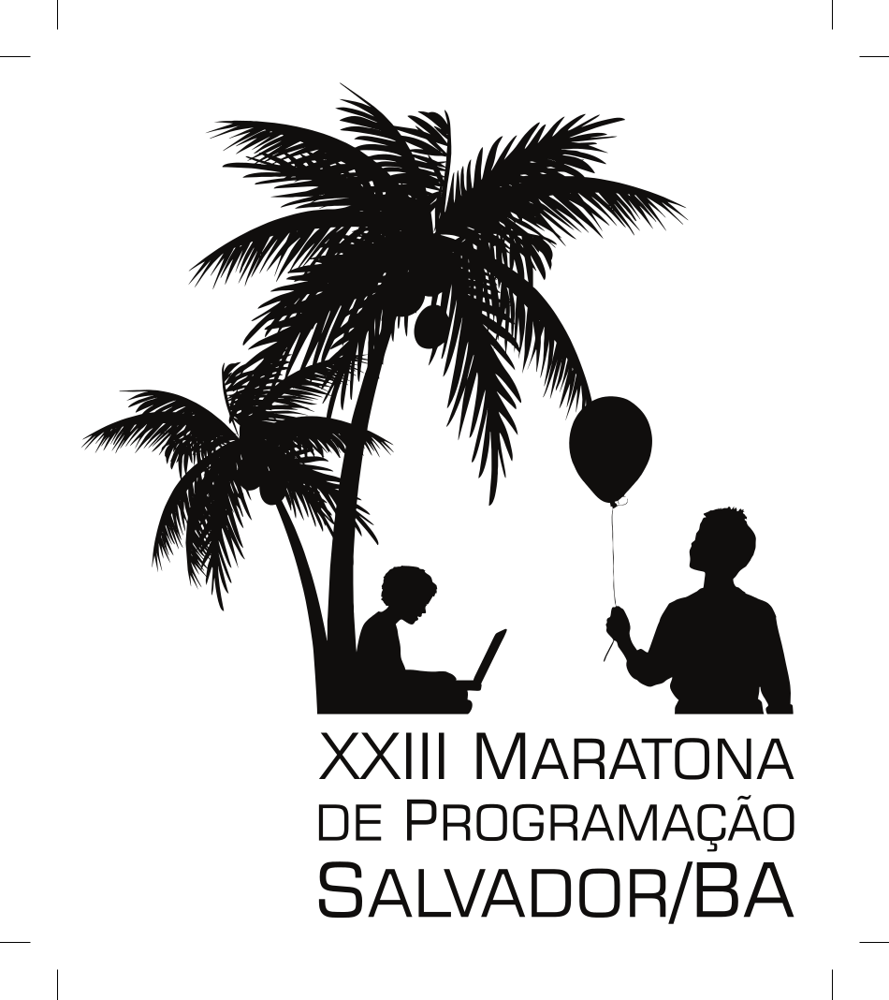

Primeira Fase: 15 de setembro de 2018
Final Brasileira: Salvador, 9 e 10 de novembro de 2018
 Final Brasileira da XXIII Maratona de Programação
A final brasileira de 2018 será realizada em Salvador organizada pelo
Senai CIMATEC e pela Universidade Federal da Bahia.
Os diretores da final são a Profa. Caroline Paim (Centro Universitário SENAI
CIMATEC), Prof. Mauricio Pamplona Segundo (UFBA) e Rubisley Lemes (UFBA).